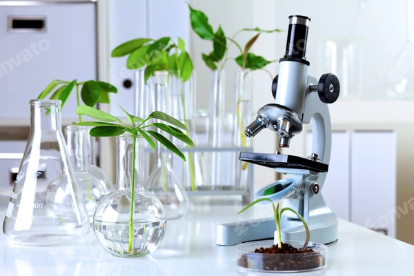

Integrated solutions for strain development, fermentation optimization, and downstream processing at cGMP scale.

From strain to purified product
80+ microbial strains optimized for high-yield production using CRISPR and adaptive evolution.
Learn moreDOE and metabolomics-driven formulation for maximum productivity and yield.
Learn moreFrom 10L to 50,000L cGMP bioreactors with real-time monitoring and control.
Learn moreCentrifugation, chromatography, TFF, and lyophilization for >98% purity.
Learn moreE. coli, yeast, filamentous fungi up to 50,000L. Fed-batch, continuous, and perfusion modes.
CHO, HEK293, and other cell lines for monoclonal antibodies and recombinant proteins.
Multi-step purification for highest purity
Clarification of harvest with disc-stack centrifuges and depth filters.
99% solids removalAKTA systems with affinity, IEX, HIC, and SEC columns.
98% purityConcentration and diafiltration with TFF systems.
95% recoveryFreeze-drying for stable final product formulation.
99% stabilityExperts in scale-up and manufacturing